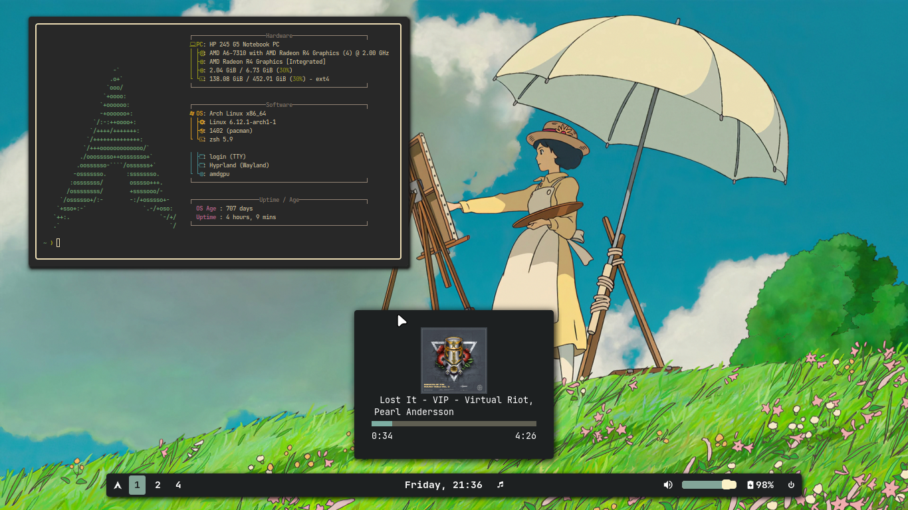

How to üçö
how to customize your linux desktop
Disclaimer: I am not a ricing expert. This guide is meant for beginners.
Ricing is an art, you wanna learn this art. You see those cool Reddit posts, or your nerd friend or perhaps PewDiePie and want your setup to look like that, then fear not! You are at the rice (pun intended) spot!
What is Ricing?
Wait wait wait hold on.... What is Ricing? Ok so a bit of history: this term comes from people customizing cheap JDM cars to make them look faster. Here, it refers to making your setup look aesthetically pleasing.
Getting Started
If you are new to ricing (and linux in general as I assume), you may need something you can rice. Most posts on Reddit are about riced window managers, hence here too I'll cover how to rice window managers. What is a window manager? It is exactly what the name says: manage windows. These are different from desktop environments like KDE Plasma, Gnome, XFCE, Cinnamon etc. Window managers are a bit more bare-bones. (in wayland these are called compositors and compositing managers, not window managers.)
NOTE: Almost all of your config files will sit in ~/.config/ directory. It is recommended to copy default configs from the git of the project (or your system) and use them as base to build on top. Google (or your preferred search engine), Man pages, and --help flags are your best friends.
What is Xorg, What is Wayland?
What are these "Xorg" and "Wayland" you speak of?... These are display server protocols. If you don't know which one to pick, just use Wayland, as it is new and currently mainstream. There's a very good chance that you are using a Wayland environment. Read more about it here.
Recommended WMs/Compositors
- Wayland: Niri, SwayFX, Hyprland
- Xorg: i3wm, Bspwm, AwesomeWM, Openbox
Just pick one! My own recommendation would be Niri.
NOTE: There are too many window managers and compositors that exist, not all of them can be listed here. Each one of them serves a different use case.
Terminal Emulators
A lot of ricing will start from terminals. Here are some terminal emulators that I have used, and these are the only terminals I have extensively used, not really a 'best terminal emulator' list.
- Foot: (wayland only) a really nice and fast terminal
- Alacritty: a just works terminal
- URxvt: (Xorg) another really fast terminal that supports image rendering
- XTerm: (Xorg) really fast but I recommend URxvt over this
- Kitty: a bit slower but another just works terminal that supports image rendering
- st: (Xorg) fast but a hassle to configure
Why is image rendering in terminal important?... It's not, but you can do things like previewing images in TUI file managers (like ranger and yazi), show images in fetch output and do other cool stuff like reading manga in a terminal!
NOTE: "(Xorg)" means that the terminal was made for X11 environment, it will run in Wayland but through Xwayland (a compatibility layer), which is a bit slower than applications which natively support Wayland. (like foot, ghostty, alacritty, kitty etc.)
Status Bars
- Wayland: Waybar, Swaybar
- Xorg: Polybar, Lemonbar, Tint2
Widgeting systems
Bars mentioned above are fairly simple and may not suit needs of some of you. Who doesn't want a nice dashboard, custom bar, control panel, network widget, and custom music & notifications!
- Eww: Elkowar's Wacky Widgets, configured in a lisp-like language
- AGS: (Wayland only) Ayulur's GTK Shell, configured in multiple languages, mainly TypeScript and JavaScript
- Fabric Shell: Written and configured in Python
- Quickshell: Configured in QML
- AwesomeWM: Although not a widgeting system itself, it has a really nice widgeting system configured in Lua.
NOTE: Among the above, I have only used Eww, AGS and AwesomeWM. I would recommend AGS as it is more batteries included and typescript is easier. AwesomeWM is the way to go if you also want a window manager.
Fetch Tools
It's not a rice unless you use a fetch tool. A cool ASCII art and system info in terminal makes you look like a hackerman (/j). There are a ton of them around, like FastFetch, Neofetch, BunnyFetch, and my own work in progress fetch tool (shameless shill) written in assembly - FetchASM. You can try writing your own fetch tool, it's fairly simple and a fun way to learn more Linux!
Actually getting started
Here I will lay down some steps you can follow when ricing, these are not hard and fast rules but certain guidelines or a checklist that you can follow, they don't need to be done in the exact order either, you can do step 2 before 3 if you want to!
Step 1: Having a reference
Before you actually start ricing, have a reference, an idea or an image in your head that you want to replicate. This is helpful as the brain doesn't just create ideas out of thin air. Look at some rice, like Google "awesomewm rices", "eww linux rices". This will help you keep a certain goal in mind. As you get better, you will not need references and will be able to create more "original" rices.
Example reference: (an old rice of mine)
When looking at a reference take notes of the bar style, window style, window decorations (titlebars), custom widgets, colors, background wallpaper, font, and other effects like shadows, blur etc.
(In this rice, I am using Hyprland with double border plugin, and AGS as my bar and music widget, the color palette is gruvbox)
NOTE: This step is very important, it can save you a lot of time. Instead of asking others "what should I add?" you will already know what to add.
Step 2: Finding a color palette
There are a lot of color palettes, like Gruvbox, Nord, TokyoNight, Catppuccin, Everforest, Rose Pine etc. Pick one, or use the same one as in your reference. Here are my favourite ones:
A good rule of thumb is to use only two to three colors of your palette when theming your system. In the first image, I am using only yellowish-brown, and magenta, with some green thrown here and there for randomness. In the second image, it is magenta as accent, and some light and dark gray for other UI elements. (of course you should have more colors for the syntax highlighting of your editor)
NOTE: Usage of tools like pywal to generate a color schemes is generally discouraged, even though they make getting a color palette extremely simple. These rarely generate good color palettes and your rice will often end up looking sloppy. Instead, use a premade color scheme that was actually designed with usage in mind.
Of course, you can make your own color palette, start with premade one, try changing colors and then see the magic.
(PS: This step can come later in ricing process, after you have laid foundations for your widgets)
Step 3: Getting a wallpaper
Finding a good wallpaper is hard, not too complex, not too simple, right contrast, right colors....oh no. Here are some sources
You don't always need the most complex wallpaper, sometimes even solid colors do the trick. Try a lot of wallpapers, even if they don't have the same palette as your rest of the rice, you will find some fitting well with the palette.
Wallpapers can greatly affect your rice, try looking at wallpapers with different contrasts (contrast between UI and wallpaper). Sometimes low contrast works, sometimes high contrast works.
Again, you do not need the most complicated wallpaper. A masterpiece rice by Xander (xander.69) from the Unixporn Discord...

Step 4: Ricing your terminal
It's not that hard. Just copy and paste. If you are lucky, the theme may already have a config file for your terminal.
As for getting nice looking prompts, you can get them at OhMyZsh, Starship or perhaps writing your own config, it is actually easy. What is a shell??
What shell should I use? Which shell is the best?...There is no answer to these questions. Different shells are for different kind of users. I like zsh but bash is also good. You can look at Xonsh, Fish, Nushell, Kornshell, Hilbish, Elvish... too many to talk about.
Step 5: Ricing the bar
This is where some real ricing starts. This step appears to be difficult but is actually very simple. Here are some points to ricing you bar:
1) Start by looking at your reference image. Take note of what you want your bar to look like.
2) Search for the default configs of your bar and try changing it around; all of the options are in English and are not hard to understand.
Alternatively for waybar look at the example configs. Try modifying the config to your liking, change the colors (in the css file), change the shapes, change font, add new icons, remove modules, add modules etc.This approach is recommended over blindly jumping into customizing waybar.
3) Look at someone else's configs if you do not understand a particular style, or ask them how they did it. (ask the documentation and Google first!)
4) Try making your bar vertical.
5) Reading the documentation is very useful.
Step 6: Custom widgets (optional)
The real fun starts here but this topic is too long and complex for a beginner's guide. There are only 3 points that can be said about this:
- Look at configs of others.
- Get inspiration from people who are good at this.
- Read the friendly manual.
- AGS examples, EWW examples, Modular AWM, Fabric examples
Step 7: GTK Themes/Icon Themes
A lot of apps that I run are made with GTK, like Thunar File Manager, Pavucontrol, xdg-desktop-portal-gtk (those "choose file" popups) and a lot more. Most popular color palettes have a GTK theme available. You can find them and put them in your ~/.themes/ folder.
Then you can use nwg-look to set the theme. If you want to make your own GTK theme, look at this. (or this if you are lazy like me)
Similarly for icons, put the folder in ~/.icons/ then use nwg-look to set them. Cursor themes are also installed in the same fashion, but you may have to check documentation of your compositor to set properly.
Step 8: Special Effects
This part is my favourite. From special effects, I mean rounded corners, shadows, animations, dimming, blur, transparency etc. This is handled by your Wayland compositor (picom in case of Xorg). The implementation differs between different compositor. Here I will discuss only a few effects.
Window Dimming
This effect can give a very aesthetic look, but should be used with caution. A really good example of well done dimming would be Xander's rice in Wallpaper section above.
(my rice from 2022) Unfocused window in the above screen shot has been dimmed.
Shadows
Shadows can make a rice fit together. Not enough contrast? Try turning on the shadows! Shadows go very well with window dimming as well. Again, I would refer to Xander's rice above (in wallpaper section), shadows only for the focused window and the dim gives a really nice focus effect.
Try playing with blocky shadows! (by setting shadow radius or shadow blur to a lower value)
Rounded Corners
The general rule of thumb when trying rounded corners is to no overdo it. Try very small values of radius and experiment with them.
but nobody is stopping you if you wanna overdo it........
Step 9: Fonts
To install fonts, put the font files in ~/.fonts/ and set them using nwg-look and your respective applications.
fc-list | grep 'font keyword here' is a very useful command...
...ok hear me out, this is where all my wits fall apart. If you can't tell already: I suck at choosing and using fonts. This is the part I am worst at.
For starters, JetBrains Mono and Iosveka Mono are great monospace fonts. Ubuntu UI is a good UI font. This entire site is using Share Tech Mono Font. If you want icons in your font (which is a very popular way to show icons in terminals and bars like waybar), check out Nerd Fonts.
Currently using Terminus, a bitmap font.
Step 10: Getting advice
This is the final step in this guide, and a very important one - getting advice. People with sharp eyes and more experience can teach you a lot. Every now and then people criticize me and make me better at this craft.
Several people like me are always happy to criticize and give advice. Ask people for advice. Just. Ask.
(but don't ask vague questions like "what should i add"!!!)
Wrapping it up
If you actually read all that then thank you and congratulations. This guide took some effort to write (and forced me to learn webdev), so I really appreciate you (the reader) for reading all this.
Keep in mind that at the end of the day, YOU are the one using your device, so theme it however you want. Having fun is more important than anything else. You can just scrap everything I said in this guide and do it YOUR own way. It's all up to you.
TL;DR
Read the friendly manual.
##################
Draco Silver
13th June 2025